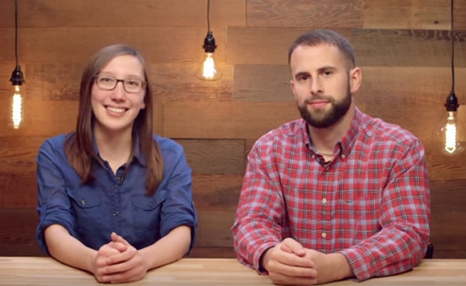

02. Getting Started
Getting Started
Now that you've completed the Alexa Fact Skill tutorial, we can start talking about the History Skill. We are providing you with starter code from GitHub with some unit tests to help guide your progress. The next concept has some tasks that you need to complete to build the history skill. You can run the unit tests as you complete the tasks to see a reflection of your progress.
Your Amazon accounts
By completing the Fact skill tutorial, you should have already completed setting up your Amazon Alexa Developer account and Amazon AWS account.
If you do not already have an AWS account, be sure to create one. You will need to provide a credit card to set up the account, but new accounts receive the AWS Free Tier which should suffice for this project as it includes one million non-expiring AWS Lambda requests per month. Note: Lambda functions for Alexa skills can be hosted in either the US East (N. Virginia) or EU (Ireland) region. These are the only regions the Alexa Skills Kit supports, so you may need to change this setting in the upper right portion of your screen on the console.
Starter Code
Install your starter code locally.
- Download or clone the starter code from GitHub
- Save it in a directory named
NLPND-VUI-Alexa. It contains the following directories and files:- src/model/en-US.json - This is the main Alexa file. It contains the components that Alexa needs to build the "Interaction Model" for your skill. It used to declare "intents", which are ways to handle user requests. The file is also used to give Alexa samples for what a user might say to trigger a certain intent (for example, "tell me a history fact").
- src/lambda/index.js - This is the main Lambda file. It will contain the code that is tasked with finding the right response to give to the user -- initially picking a random fact from a list, but later searching a list for facts for a certain year.
- tests/*.js - various unit tests to be run locally with mocha; you do not need to change these
After completing the tasks locally, we'll just copy the contents of the first two files in the list above and paste them in specific places in the Alexa and AWS consoles. You can think of the Alexa code as front-end code guiding the user's interaction with Alexa, and, the lambda code as the back-end that gets a programmatic request and returns an appropriate response.
Environment
1. Install Node.js per instructions on the website for your machine.
2. Install dependencies for the project
- Navigate to the
NLPND-VUI-Alexa/srcdirectory of the starter code and open a terminal window. - The dependencies we need are listed in the
package.jsonfile and include the alexa-sdk library for Alexa as well as mocha test framework for Node.js along with chai and aws-lambda-mock-context for local unit testing. Install them all with the following command:
$ npm install- There should now be a directory named
node_moduleswithin thesrcdirectory. This is how Node.js attaches libraries for your code.
3. Unit testing
- You can now run the provided unit tests from the command line within the
srcdirectory with the following command. Try it now:
$ npm testThe test code is in two parts: "Part 1", and "Part 2". Initially, all tests will fail. As you complete the tasks ahead, you can use these unit tests (and write more yourself) to quickly test code changes prior to deployment to AWS Lambda.
4. JavaScript coding
At this point, you can open your project with a code editor of your choice. Some free ones that support JavaScript and Node.js include Atom and Visual Studio Code
Udacity has a free course available that will quickly bring you up to speed on JS syntax:
Introduction to Javascript

The JavaScript skills needed for this project primarily require following patterns you find in the existing starter code and the use of general coding constructs such as for loops, conditional statements, and arrays. Here are a few links that might be helpful for quick reference:
* js for loops
* js conditional statements
* js arrays
* js String includes() method
* js JSON
* Alexa skill examples
* Node.js API reference